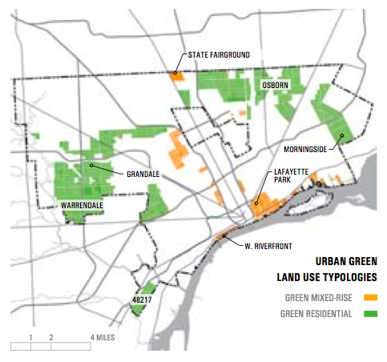

Future opportunity. For Detroit’s neighborhoods, challenge reveals opportunity. Many of Detroit’s neighborhoods today are defined by the innumerable challenges to quality of life, including public safety, education, health and employment, rather than their capacity to realize a thriving place in which to live. Yet within these challenges exist strengths in the city’s historic neighborhoods, such as Grandmont Rosedale and Indian Village; striking mid-century hallmarks of urban design, such as Lafayette Park; and emerging Live+Work environments in Corktown and Eastern Market. The breadth of these types of neighborhood provides the starting point for Detroit’s neighborhood transformation.
The Detroit Strategic Framework recommends a variety of ways to strengthen Detroit’s neighborhoods by leveraging existing assets and strengths while addressing specific challenges. The result will be more sustainable and attractive places to live; better quality of life; and inviting, affordable living options for a diverse range of households. Whether low- or high-income; single or married; with or without children; retired, working, or in school; longtime residents or newcomers, Detroit residents need options that connect them to work opportunities, services, recreation—and each other. Detroit must be welcoming to all, including those moving in from neighboring cities, those who are originally from other countries, and those with limited means.
A series of framework zones can define a range of existing conditions shared by parts of the city, focusing specific strategies to address the real conditions of different neighborhoods, using a wide array of ideas for design (“typologies”).
More than two years of neighborhood engagement and information sharing has led to the creation of these strategies. The important feedback provided by this dialogue has been woven into a series of tactics, tuned to the existing physical and market conditions within the framework zones, broken into implementation horizons, and targeted to achieve overall objectives for neighborhoods of all types. In each case, the strategies themselves are built to fulfill important quality-of-life objectives that have been defined through community feedback.
Neighborhood parks, educational institutions, centers for medical innovation, an iconic skyline, historic neighborhoods, and an unmatched international riverfront: Detroit has the foundational assets that make cities attractive. At the center of this are the assets woven within the city's neighborhoods, where families come together, communities are fostered, and dynamic life thrives. These include majestic trees, inherent civic capacity, neighborhood organizations, retail, churches, parks, recreation centers, schools, and cultural centers. Detroit must find a way to support these important places and qualities while cultivating an environment in which many more can be established through the capacity of Detroiters. To get there, resources must be strategically focused so that the investments will benefit all residents. In creating and sustaining such assets, the quality of life for Detroiters can improve as the city's attractiveness to potential new residents grows.
Smaller cities may be defined by one prevailing neighborhood type, or a center within which the majority of the population lives. Large-scale cities such as Detroit can provide a wider array of neighborhood choices. Unfortunately, today, Detroit has not fulfilled that opportunity. Although each neighborhood choice may not appeal to every household, each household should be able to find a neighborhood choice that suits it. One of Detroit's most unique and powerful potential strengths is its potential to provide a range of regionally competitive neighborhoods to attract and retain a greater number of residents. This is important because Detroit continues to lose residents to other nearby cities.
The strategies put forth in this element of the Strategic Framework show how to address specific existing challenges and leverage inherent strengths to create a range of neighborhood choices. These include traditional neighborhoods (low and medium density), neighborhoods of mixed use and higher density (neighborhood center, district center, and city center), new neighborhoods for urban living and making (art and artisanal, clean-industry innovation, and live+work entrepreneurship), and new neighborhoods for urban green living (green residential and green mixed-rise). While stabilizing and strengthening a number of Detroit's existing neighborhoods and mixed-use areas will contribute to a collection of attractive, well-known neighborhood types, it is within the new neighborhood typologies that Detroit may transform existing liabilities of vacancy, abandonment, and disinvestment into new dynamic urban areas for living that reinvigorate unused or overlooked assets to create completely new neighborhood models, establishing Detroit as a leader in urban revitalization and design.
Strategies used to strengthen and reinforce existing neighborhoods, and new neighborhoods for urban living, must be as diverse as the quality-of-life elements they seek to improve. To achieve this, each strategy must be defined by specific existing conditions, the range of possible future neighborhood typologies associated with those conditions, and the overall quality of the objectives being given priority. Beyond that, each potential strategy must be effectively coordinated to ensure its broad viability and impact across the city. Detroit can no longer withstand well-intentioned investments that may benefit one neighborhood, while ultimately undermining the viability of others.
Within this model, the range of potential implementers, from residents to institutions, can customize specific tactics to achieve their goals, operating within a common framework for decision making, linking overall objectives for land use, economic growth, and city systems with strategies tailored to achieve specific results. This allows each strategy to address the unique needs, capacity, and assets of each neighborhood to maximize the impact of investment and effort.
Thriving contemporary cities are hallmarks of diversity, including employment options, income, ethnicity, social interests, and individual expertise. Within this context, Detroit must provide a diverse array of housing types to appeal to a range of people and households. At the height of the automotive boom within Detroit and its region, the single-family home came to dominate the city's housing spectrum, creating housing stock that has limited the city's ability to meet current market demand for greater multi-family housing.
To be viable and sustainable, Detroit's neighborhoods now need to provide a wider choice of housing types. The Detroit Strategic Framework coordinates neighborhood strategies with existing conditions and future typology objectives to create strategic, targeted housing rehabilitation, renovation, and new construction across multiple neighborhood types, including traditional neighborhoods; mixed- use centers; and new, innovative neighborhood types such green mixed-rise, green residential, and live+make. The breadth of these neighborhood typologies provides a platform for creating a variety of housing options.
Many Detroit residents are recognized, active participants in their future. They have long done for themselves what others could not, and they have been an integrated part of the planning process for the Detroit Strategic Framework. The process has capitalized on the insight, capacity, and commitment of all Detroiters to realize a comprehensive decision-making framework. The means and methods for achieving the substantial transformative strategies identified within the process will require no less integration and engagement with all Detroiters— residents and civic leaders—ensuring a voice for everyone. Residents bring with them a localized expertise that adds unmatched value to integrated strategies for investment. To ensure residents have the opportunity to participate in their future, the Detroit Strategic Framework provides a comprehensive framework for decision making that will facilitate better, more informed coordination for all residents. This includes continuing to facilitate neighborhood dialogue regarding how neighborhoods can use the Framework and its strategies, making sure that important strategies being used in one neighborhood can create a better- performing city at large.
Certain challenges facing Detroit's neighborhoods cut across all parts of the city. They include public safety, education, health, and city services. While there may be specific place-based strategies to address these issues in specific neighborhoods, a larger set of coordinated strategies must be developed to address these challenges on a citywide scale. Similarly, effective strategies developed in one neighborhood hold the potential to benefit neighborhoods across the city. The citywide strategies represent the full range of recommendations that could be applied within Detroit's neighborhoods. Many of these recommendations came directly from Detroit residents and neighborhood organizations who witness the challenges to their neighborhoods on a daily basis. This set of strategies contains the seeds of change to improve quality of life across all neighborhoods that will need further development as the Detroit Works Project moves into implementation.
Urban mixed-use neighborhoods seek to leverage employment districts to create higher- density, mixed-use residential communities. Growth in these areas builds on the economic engine of medical centers, universities, industry, and corporations to catalyze future residential, retail, and economic development. These areas include the Central Business District, Midtown, New Center, and the McNichols corridor. The character of these districts is shaped by the major cultural and institutional assets within them, including high-quality parks and public spaces, museums, theaters, stadiums, and schools. Urban Mixed-Use districts are the hubs of a regional transit network that can connect the city to the larger region, state, and Detroit Metropolitan airport.
Urban live+make neighborhoods are built from functionally obsolete industrial areas within the city. The spaces afforded by former industrial buildings allow for their creative reuse for a wide range of entrepreneurial and artistic uses. Residential lofts may be incorporated into the redevelopment, but the focus of the district is on entrepreneurship, creativity and innovation, leading to new forms of business, production, art, and lifestyle. Open space on the fringes of these districts provides opportunity for research or artistic exploration and events. These areas reinvent entrepreneurship for the 21st century within the space of discarded 20th century industry.
Urban green neighborhoods take landscape as the predominant transformational development. These neighborhoods transform a perceived liability (vacant land) at multiple scales, from the individual side lot to interconnected greenways, integrating it with the residential fabric of the neighborhood. Central to these neighborhoods is the creation of a unified, neighborhood-scale vision for repurposing of its land and rebuilding community.
Today a large percentage of the city consists of traditional neighborhoods made up of detached single- family homes on tree-lined streets, and ringed by commercial corridors. However, many of these neighborhoods have lost some of their luster as residents have left, foreclosures have occurred, and the cost of maintaining the physical environment has placed a major burden on residents. Traditional Neighborhoods need improvements to their city systems and infrastructure to make them competitive with peer neighborhoods in the region. When transformation is achieved in these neighborhoods, by all appearances they will be competitive with their regional peers, but the means and methods to have achieved their transformation will be different.
Alternative use areas are areas that are anticipated to see declining population and the expansion of vacant land. Given the challenges associated with very high-vacancy, many people living in these areas would move to a safer, amenity-rich neighborhood if provided the opportunity. At the same time, many residents have a loyal devotion to their properties and larger communities. Whilethe opportunity to rebuild these neighborhoodsinto what they were is no longer a possibility, action must be taken to improve the quality of life for residents who will continue to live inthese areas. These areas hold the potential for reinvention with new productive land uses, but the rights of existing residents must be upheld, with residents included in the process of reinvention, not imposed upon.